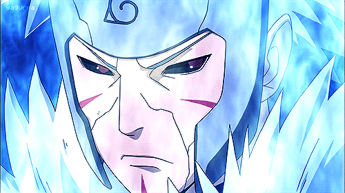
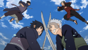

Tobirama Senju (千手扉間, Senju
Tobirama) was a member of the renowned Senju clan, who, together with his elder brother and the Uchiha clan,
founded the first shinobi village: Konohagakure. Throughout his lifetime, Tobirama would work tirelessly to
achieve political stability and implement the institutions that made the village system work, thus ensuring
Konoha's continuity and prosperity. After his brother's death, he would earn the title of Second Hokage (二代目火影,
Nidaime Hokage, Literally meaning: Second Fire Shadow).
Background
 Tobirama was born during the
Warring States Period, and was the second of Butsuma Senju's four sons. He and his brothers grew up on the
battlefield waging constant war with their rivalling clans especially the Uchiha. After the deaths of their
brothers: Kawarama and later Itama, Tobirama and his older brother, Hashirama, decided a new shinobi system
would need to be implemented to end the cycle of child deaths — a system that would require an alliance between
the warring clans.[5] At some point in time, it became apparent that Hashirama got into the habit of
disappearing into the forest for extended periods, and as such, Tobirama accepted his father's assignment to
follow Hashirama and find out what he was doing.
Tobirama was born during the
Warring States Period, and was the second of Butsuma Senju's four sons. He and his brothers grew up on the
battlefield waging constant war with their rivalling clans especially the Uchiha. After the deaths of their
brothers: Kawarama and later Itama, Tobirama and his older brother, Hashirama, decided a new shinobi system
would need to be implemented to end the cycle of child deaths — a system that would require an alliance between
the warring clans.[5] At some point in time, it became apparent that Hashirama got into the habit of
disappearing into the forest for extended periods, and as such, Tobirama accepted his father's assignment to
follow Hashirama and find out what he was doing.
From tracking
Hashirama, Tobirama discovered that he was meeting with a boy named Madara: a young Uchiha. After Tobirama
reported this to their father, Butsuma pressured Hashirama to lead Madara into an ambush to be carried out by
himself and Tobirama. Upon springing the trap, however, they were met by Madara's family — who had similar plans
and while their fathers clashed — Tobirama fought Izuna Uchiha: Madara's younger brother.[6] Hashirama and
Madara were able to negotiate a temporary ceasefire, allowing all of them to walk away without bloodshed. In the
years following their families would continue to clash, Hashirama against Madara and Tobirama against Izuna. On
one occasion Tobirama eventually mortally wounded Izuna.
>Previous Page
>Home Page